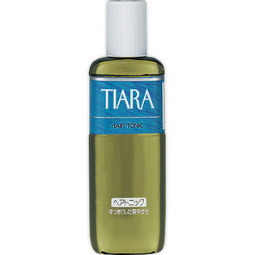

返回列表
产品名称：ティアラ ヘアトニック

資生堂 ティアラ ヘアトニック －（医薬部外品）
メーカー 資生堂
JANコード 4901872336814
商品の特徴
髪の生育をたすけ、ぬけ毛、ふけ、かゆみを防ぐヘアトニック
さわやかな清涼感が長持ちし、すっきりとした使い心地で地肌をすこやかに保ちます。
成分・分量
-
用法及び用量
【使用方法】
●洗髪後、または普段のお手入れにお使いください。※洗髪後に使用する場合は、水気を十分にふきとってからお使いください。
●適量を地肌にふりかけ、全体になじませるようにして指のはらで軽くマッサージしてください。